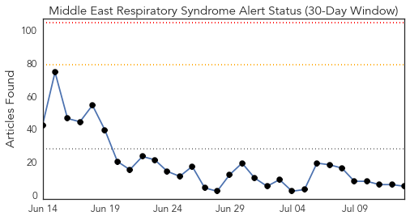
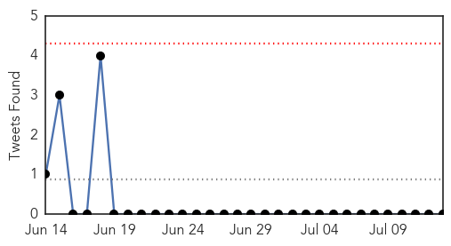
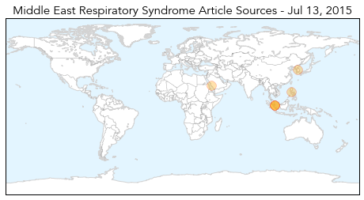
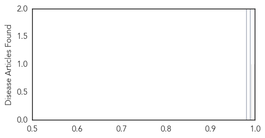

Yellow Fever
30-Day Web Trend
3 alerts, 0 warnings

30-Day Twitter Trend
0 alerts, 0 warnings

Article Locations

Article Confidences

Top Articles:
-
No articles found for Jul 13, 2015
Top Tweets:
-
No tweets found for Jul 13, 2015
MERS
30-Day Web Trend
0 alerts, 0 warnings

30-Day Twitter Trend
0 alerts, 0 warnings

Article Locations
Article Confidences
Top Articles:
- 0.999
- A potential epidemic: Understanding, combatting MERS
- 0.992
- 62 suspected MERS cases investigated, all negative: MOH
- 0.989
- The Bali Times Blog Archive Bali Steps Up Monitoring Measures to Prevent Spread of MERS
- 0.989
- 62 suspected MERS cases reported in Singapore, all negative
- 0.981
- Ministry urges travellers to avoid camels this summer
- 0.980
- 62 Suspected MERS Cases Reported In Singapore, All Negative
Top Tweets:
- 0.711
- AFD Blog `Saudi MOH Reports 2 MERS Cases' MERS-CoV http://t.co/aXAux5qsq0